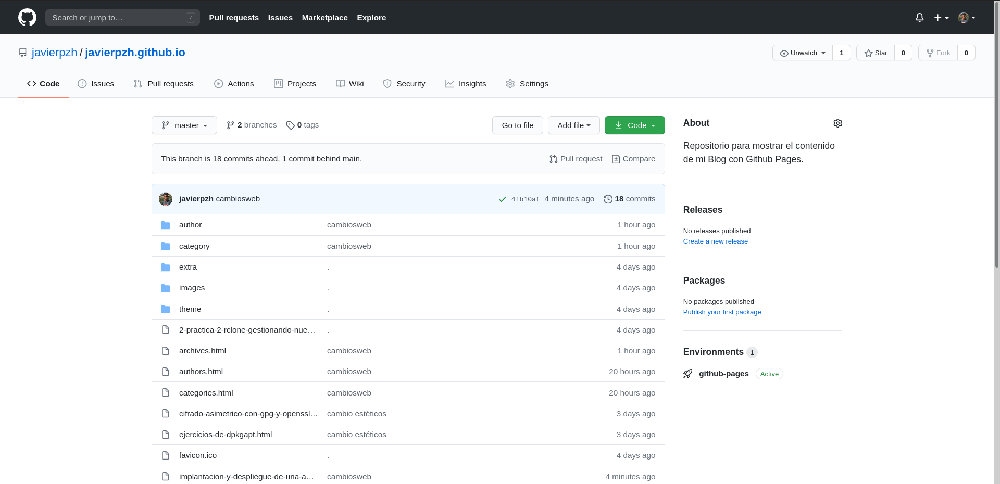
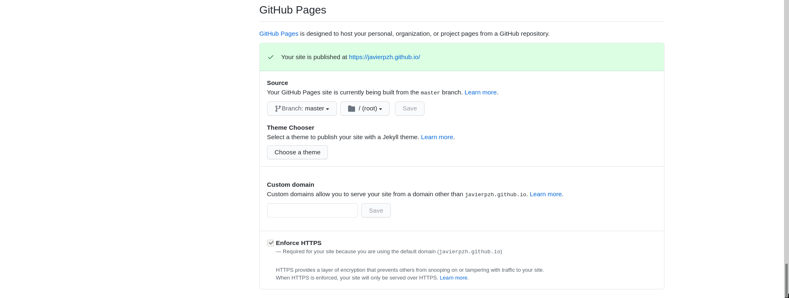

Ejercicios
1. Selecciona una combinación entre generador de páginas estáticas y servicio donde desplegar la página web. Escribe tu propuesta en redmine, cada propuesta debe ser original.
He decidido utilizar como generador de páginas estáticas Pelican, ya que utiliza el lenguaje de Python y es el que más he utilizado y el que más controlo. Como servicio donde desplegar la web he decidido utilizar GitHub Pages ya que todos los cambios los iré guardando en un repositorio de mi GitHub.
2. Comenta la instalación del generador de página estática. Recuerda que el generador tienes que instalarlo en tu entorno de desarrollo. Indica el lenguaje en el que está desarrollado y el sistema de plantillas que utiliza.
Voy a trabajar en un entorno de desarrollo, para así evitar posibles conflictos a la hora de instalar Pelican y las demás necesidades. Para crear un entorno virtual, antes debemos instalar este paquete:
sudo apt-get install python3-venv
Ahora ya podemos crear nuestro entorno de desarrollo. Hay que decir que este entorno lo creamos dentro de una carpeta y solo lo podremos activar desde esa carpeta, pero lo vamos a poder utilizar por todas las rutas. Para crear un entorno:
python3 -m venv (nombreentorno)
Para activarlo:
source (nombreentorno)/bin/activate
Si lo hemos activado bien, vemos que ha cambiado el prompt y ahora aparece el nombre del entorno. Ahora estamos trabajando en un nuevo espacio, que es independiente a los paquetes instalados de nuestro equipo, si queremos ver lo que tenemos en este espacio:
pip list
Para instalar cualquier paquete, es igual que con apt pero con pip. En mi caso voy a instalar Pelican y Markdown que es el lenguaje que voy a utilizar para crear el contenido de mi web:
pip install pelican markdown
Pelican es un generador de páginas estáticas libre y que está desarrollado en Python. Utiliza el sistema de plantillas de jinja2. Tiene muchas ventajas ya que le puedes añadir muchos temas y plugins diferentes de una forma muy sencilla, con el objetivo que te centres únicamente en la elaboración del contenido, que se escribirá en un archivo Markdown, este lenguaje es muy simple y muy fácil de aprender, puedes ver un poco aquí.
Para crear un nuevo sitio web con Pelican:
(blogjph) javier@debian:~/virtualenv/Pelican/BlogJPH$ pelican-quickstart Welcome to pelican-quickstart v4.5.0. This script will help you create a new Pelican-based website. Please answer the following questions so this script can generate the files needed by Pelican. Where do you want to create your new web site? [.] What will be the title of this web site? Javier Pérez Hidalgo Who will be the author of this web site? Javier Pérez Hidalgo What will be the default language of this web site? [en] es Do you want to specify a URL prefix? e.g., https://example.com (Y/n) n Do you want to enable article pagination? (Y/n) How many articles per page do you want? [10] What is your time zone? [Europe/Paris] Europe/Madrid Do you want to generate a tasks.py/Makefile to automate generation and publishing? (Y/n) Do you want to upload your website using FTP? (y/N) Do you want to upload your website using SSH? (y/N) Do you want to upload your website using Dropbox? (y/N) Do you want to upload your website using S3? (y/N) Do you want to upload your website using Rackspace Cloud Files? (y/N) Do you want to upload your website using GitHub Pages? (y/N) Done. Your new project is available at /home/virtualenv/Pelican/BlogJPH/
Si listamos los directorios podemos ver como nos ha creado una serie de carpetas que son las que contendrán el contenido e información de nuestra web. En mi caso, dispongo de estos directorios y ficheros:
-
blogjph: directorio que hace referencia al entorno virtual.
-
content: directorio generado por Pelican donde vamos a almacenar todo el contenido de nuestra web. Tanto archivos Markdown como imágenes. Estas últimas en un subdirectorio dentro de esta carpeta, con el nombre images.
-
output: directorio generado por Pelican donde se guarda la salida en formato
.html. -
pelican-clean-blog: directorio que contiene el tema de la página. Esto es algo que cambiará en función al tema que escoja y añada cada uno para su sitio web.
-
pelicanconf.py: fichero de configuración de Pelican. Aquí podemos establecer el nombre de la web, el autor, el lenguaje, el tema, ...
-
Makefile, publishconf.py , tasks.py: son ficheros que utiliza Pelican para su configuración y sus procesos internos (ej: traducir de Markdown a html) y que no hace falta editar.
3. Configura el generador para cambiar el nombre de tu página, el tema o estilo de la página,… Indica cualquier otro cambio de configuración que hayas realizado.
Al realizar el comando del paso anterior y crear una paǵina con Pelican, como ya he dicho se generan una serie de ficheros y directorios, y uno de ellos es el fichero pelicanconf.py, que contiene la información básica de la paǵina y su principal configuración.
Aquí podemos cambiar su nombre, su autor, el lenguaje, también podemos aplicar un tema determinado que nos descarguemos.
En mi caso, en mi fichero de configuración he cambiado el tema de mi página, he añadido un favicon, y una serie de links a mis redes sociales.
Queda tal que así:
THEME = "theme"
STATIC_PATHS = [
'images',
'extra/favicon.ico',
]
EXTRA_PATH_METADATA = {
'extra/favicon.ico': {'path': 'favicon.ico'},
}
# Social widget
SOCIAL = (('Instagram', 'https://www.instagram.com/javierpzh/'),
('Twitter', 'https://twitter.com/jperezhid_'),
('GitHub', 'https://github.com/javierpzh'),
('Facebook', 'https://www.facebook.com/javier.perezhidalgo.904'),
('envelope-square', 'mailto:javierperezhidalgo01@gmail.com'),
)
4. Genera un sitio web estático con al menos 3 páginas. Deben estar escritas en Markdown y deben tener los siguientes elementos HTML: títulos, listas, párrafos, enlaces e imágenes. El código que estas desarrollando, configuración del generado, páginas en markdown,… debe estar en un repositorio Git (no es necesario que el código generado se guarde en el repositorio, evitalo usando el fichero .gitignore).
Toda la información y contenido de la web, tanto las páginas escritas en Markdown, como el tema, las imágenes, ... la tengo en este repositorio de Github.
Existe un directorio llamado output, donde se guarda el código generado a partir de los documentos escritos en Markdown, de las imágenes, ... Esta carpeta se actualiza conforme realizamos cambios en nuestras paǵinas, por tanto, es la que nos interesa ya que este contenido es el que tenemos que subir al servicio de hosting.
Se encuentra en el directorio donde tenemos el repositorio mencionado antes, por eso vamos a hacer un fichero .gitignore , para que el repositorio no guarde los cambios de esta carpeta al hacer un commit.
Para que entendamos lo que hace el fichero .gitignore , básicamente cuando hacemos un git commit && git push el repositorio lee este fichero y detecta que esta carpeta no la tiene que actualizar, por tanto no se preocupa por ella.
Es importante decir que para evitar problemas, es conveniente crear el fichero .gitignore antes que los archivos que vamos a especificar dentro. Si nos encontramos en la situación que ya existe dicho archivo, podemos crear el .gitignore y luego sacar el archivo del repositorio, hacer un commit, un push y volver a añadirlo al repositorio.
Ahora que tenemos esta carpeta aislada por así decirlo, vamos a crear un nuevo repositorio dentro de ella para que guarde únicamente el HTML generado, esto nos interesa ya que este repositorio es el que utilizaremos para desplegar nuestra web. Para asociar esta carpeta a nuestro segundo repositorio:
cd output/ git init git add . git commit -am "añado el contenido" git remote add javierpzh.github.io git@github.com:javierpzh/javierpzh.github.io.git git push --set-upstream javierpzh.github.io master
Como vemos ya lo hemos asociado a la rama master de nuestro repositorio.
5. Explica el proceso de despliegue utilizado por el servicio de hosting que vas a utilizar.
Como he comentado antes, voy a utilizar GitHub Pages como servicio donde voy a desplegar mi web. Nos dirigimos al repositorio que contiene el código generado.

Nos vamos a los ajustes(settings), y aquí buscamos la sección llamada GitHub Pages, y en ella, nos dirigimos al apartado de fuente(source) y seleccionamos la rama master de nuestro repositorio. Guardamos los cambios y en unos minutos tendremos generada nuestra página estática con Pelican y GitHub Pages.

6. Piensa algún método (script, scp, rsync, git,…) que te permita automatizar la generación de la página (integración continua) y el despliegue automático de la página en el entorno de producción, después de realizar un cambio de la página en el entorno de desarrollo. Muestra al profesor un ejemplo de como al modificar la página se realiza la puesta en producción de forma automática.
He creado un script que se encarga de actualizar los cambios de mis repositorios, tanto del repositorio que contiene el contenido, tanto del que contiene solo la salida. Realmente solo tendría que guardarme los cambios que se produzcan en la carpeta donde se guarda la salida, pero he incluido el primer repositorio también para solo tener que ejecutar un comando.
El script se encuentra en mi repositorio principal de la página con el nombre actualizarblog.sh.
Igualmente este es el código:
#! /bin/bash #Script que actualiza los cambios en mis repositorios, y actualiza el contenido de mi página web. make html git add . git commit -am "cambios" git push cd output/ git add . git commit -am "cambiosweb" git push cd ..
Este es un artículo del propio blog que he generado. Si quieres ir al inicio haz click aquí.